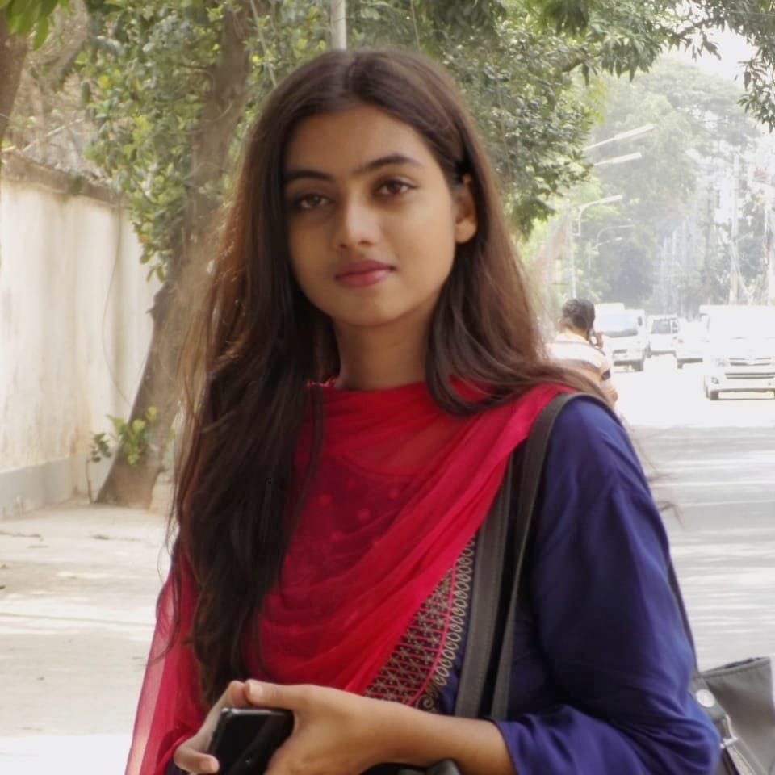

KULSUM BEGUM
Hi, My name is Kulsum Begum. I can develop any website by using html, css, javascript, bootstarp, php. Now I am studying in Computer Science and Engineering at daffodil International University. My Passion is programming. For building my career I participated many programming contest such as National Girls programming Contest, IUPC, ICPC, Take Off Programming Contest in DIU etc. Apart from that I'm serving as Assistant joint secretary in Daffodil Cultural Club. My hobbies are dancing, painting and creating hand crafts.